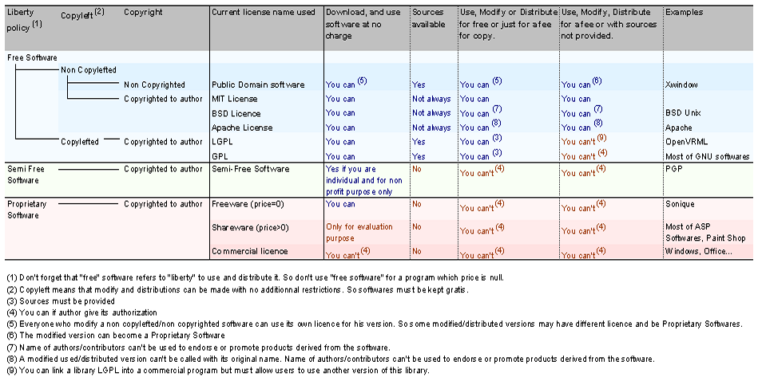

AWStats logfile analyzer 7.3 Documentation
AWStats License / Copyright
AWStats is distributed under the
GNU General Public License (GPL)
.
So you must follow the line "Free software - Copylefted - GPL" to know what are major license agreements with AWStats.

Article written by
Laurent Destailleur
.
Follow @awstats_project